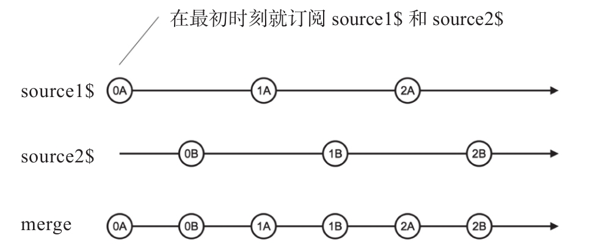

merge和concat的用法很相似，同样有静态和实例两种形式的操作符，同样可以支持两个以上的Observable对象合并，用法虽然相似，但是功能却很不一样。
1.数据汇流
通过代码分析来看区别，下面是利用merge的静态操作符形式合并两个Observable对象的代码示例：
import {Observable} from 'rxjs/Observable';
import 'rxjs/add/observable/timer';
import 'rxjs/add/operator/map';
import 'rxjs/add/observable/merge';
const source1$ = Observable.timer(0, 1000).map(x => x+'A');
const source2$ = Observable.timer(500, 1000).map(x => x+'B');
const merged$= Observable.merge(source1$, source2$);
merged$.subscribe(
console.log,
null,
() => console.log('complete')
);
代码会每隔500毫秒输出一行结果，永不停歇，输出的前几行如下：
0A 0B 1A 1B 2A 2B
merge与concat不同，merge会第一时间订阅所有的上游Observable，然后对上游的数据采取“先到先得”的策略，任何一个Observable只要有数据推下来，就立刻转给下游Observable对象。
source1$从第0毫秒开始，每隔1000毫秒产生一个数据，依次是0A、1A、2A……
source2$从第500毫秒开始，每隔1000毫秒产生一个数据，依次是0B、1B、2B……
这样，通过merge组合之后，下游的数据就是source1$和source2$的数据交叉出现，通过弹珠图5-3可以更清楚地理解merge的功能。
因为merge在第一时刻就订阅上游的所有Observable对象，所以，如果某个上游Observable对象不能完结，并不影响其他Observable对象的数据传给merge的下游。merge只有在所有的上游Observable都完结的时候，才会完结自己产生的Observable对象，在上面的例子中，source1$和source2$都不会完结，所以由merge组合产生的新数据流也不会完结。

图5-3 merge的弹珠图
一般来说，merge只对产生异步数据的Observable才有意义，用merge来合并同步产生数据的Observable对象没什么意义，看下面的代码示例：
const source1 = Observable.of(1, 2, 3); const source2 = Observable.of(4, 5, 6); const merged$= Observable.merge(source1, source2);
上面的代码通过merge合并了两个of产生的Observable对象，你可能会以为合并产生的merged$中数据序列会是这样：
1 4 2 5 3 6
实际上，merged$中的数据并不是上游数据交替组合而成，效果却是和concat一样，如下所示：
1 2 3 4 5 6
这是因为，merge做的事情很简单：依次订阅上游Observable对象，把接收到的数据转给下游，等待所有上游对象Observable完结。因为of产生的是同步数据流，当merge订阅source1$之后，还没来得及去订阅source2$，source1$就一口气把自己的数据全吐出来了，所以实际上产生了concat的效果。
所以，应该避免用merge去合并同步数据流，merge应该用于合并产生异步数据的Observable对象，一个常用场景就是合并DOM事件。
2.同步限流
merge可以有一个可选参数concurrent，用于指定可以同时合并的Observable对象个数。
假设现在有3个Observable对象，而concurrent参数的值为2，如下面的代码所示：
const source1$ = Observable.timer(0, 1000).map(x => x+'A'); const source2$ = Observable.timer(500, 1000).map(x => x+'B'); const source3$ = Observable.timer(1000, 1000).map(x => x+'C'); const merged$ = source1$.merge(source2$, source3$, 2);
其中，source3$中的数据永远不会获得进入merged$的机会，因为merge最后一个参数是2，也就限定了同时只能同步合并两个Observable对象的数据，source1$和source2$排在前面，所以优先合并它们两个，只有source1$和source2$其中之一完结的时候，才能空出一个名额来给source3$，可是source1$和source2$又不会完结，所以source3$没有出头之日。
3.merge的应用场景
我们知道fromEvent可以从网页中获取事件，只可惜，fromEvent一次只能从一个DOM元素获取一种类型的事件。比如，我们关心某个元素的click事件，同时也关心这个元素上的touchend事件，因为在移动设备上touchend事件出现得比click更早，这两个事件的处理是一模一样的，但是fromEvent不能同时获得两个事件的数据流，这时候就要借助merge的力量了，代码如下：
const click$ = Rx.Observable.fromEvent(element, 'click'); const touchend$ = Rx.Observable.fromEvent(element, 'touchend'); Rx.Observable.merge(click$, touchend$).subscribe(eventHandler);
我们用fromEvent分别获得给定DOM元素的click和touchend事件数据流，然后用merge合并，这之后，无论是click事件发生还是touchend事件发生，都会流到merge产生的Observable对象中，这样就可以统一用一个事件处理函数eventHandler来处理。